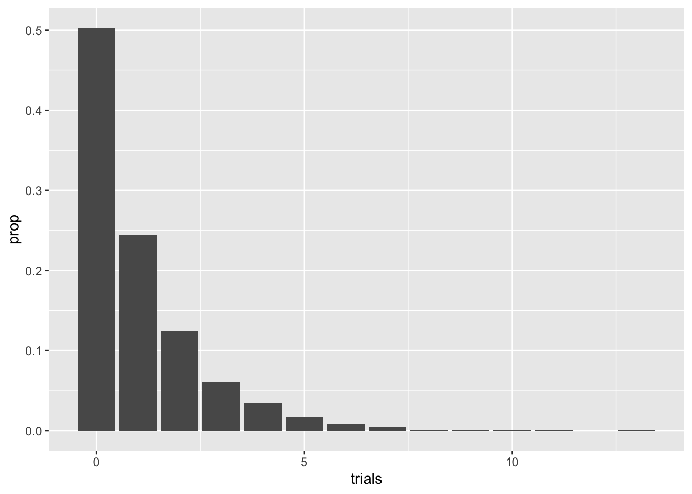
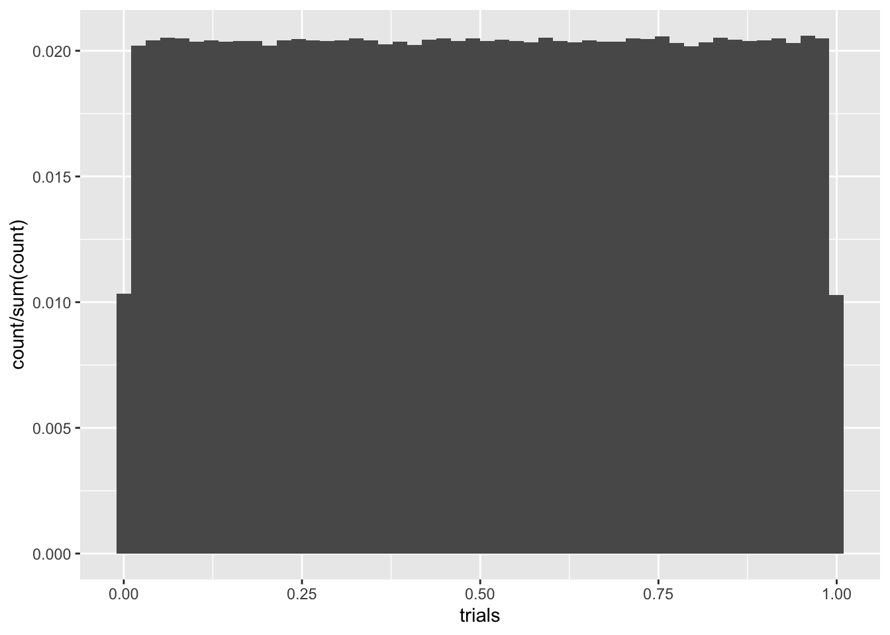
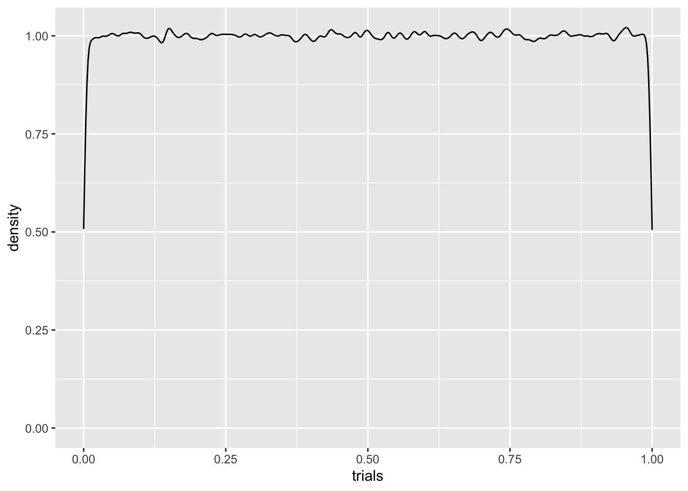
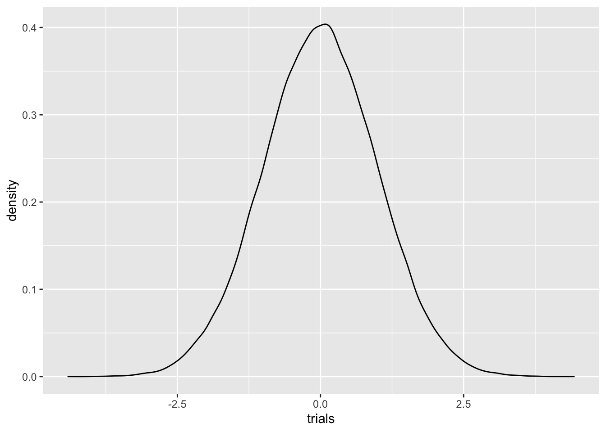
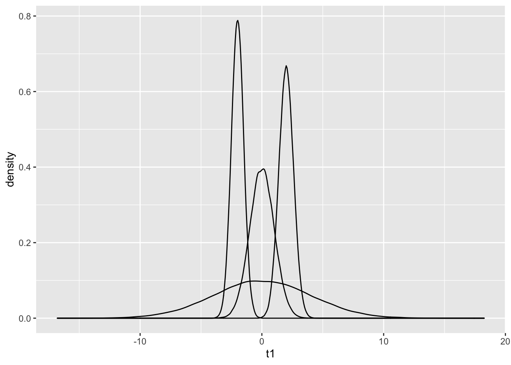
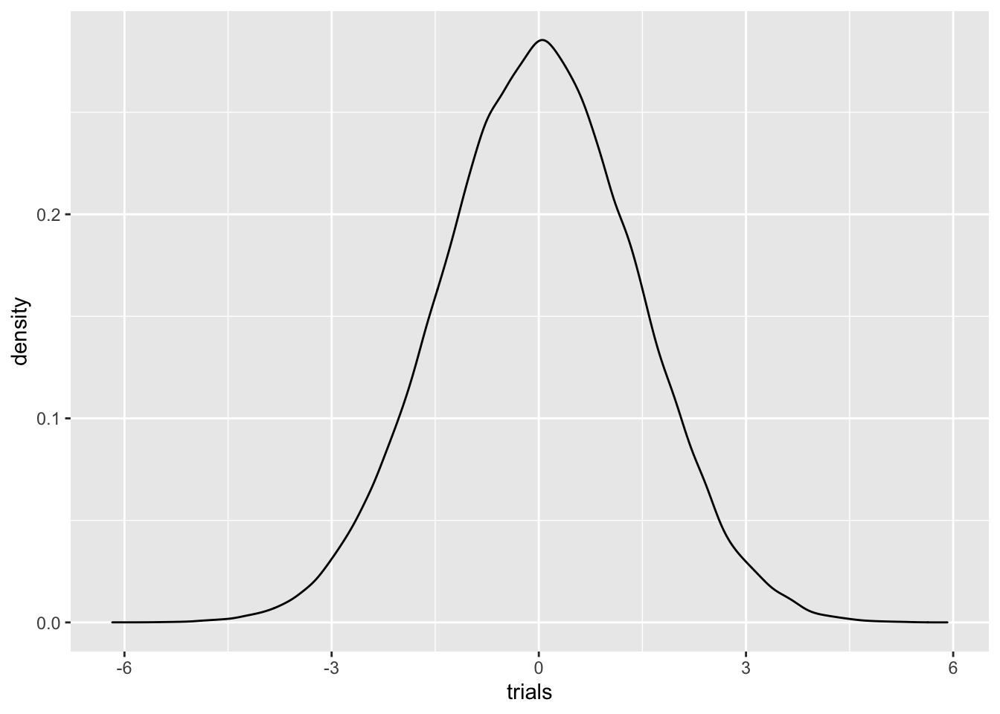
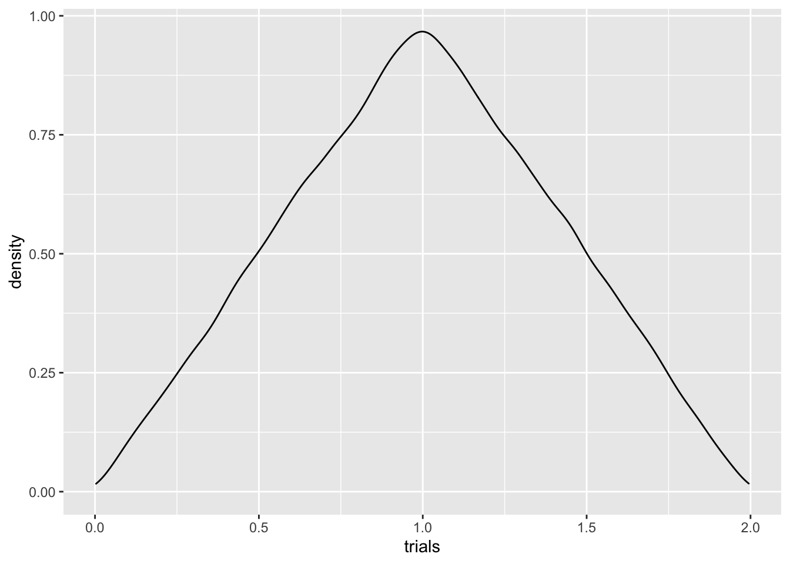

For this section, we will investigate discrete random variables, having a range (or state space) which is either finite or countable. By countable we mean that we can describe the state space by listing elements in an indexed list, or sequence, \(S = \{a_i\}_{i = 1}^\infty\). With the natural numbers \(\mathbb N\), for instance, we can set \(a_1 = 1\), \(a_2 = 2\), and so on. With the integers, we can set \(a_1 = 0\), \(a_2 = -1\), \(a_3 = 1\), \(a_4 = -2\), \(a_5 = 2\).
One might reasonably ask if we can just make such a listing for every set. Surprisingly, the answer is no! While sets of integers and even the rational numbers can be put in list form, the same is not true for the set of real numbers between 0 and 1, for instance. This was shown by Cantor in his famous diagonalization argument. In fact, the set of numbers contained in any interval for the form \([a,b]\) or \((a,b)\) is uncountable.
This sounds like pure math nonsense, but it has a direct application when trying to list probabilities down. When we have a countable state space \(S\) for the random variable \(X\), it makes sense to simply list the probabilities for each element of the state space. In other words, if \(s \in S\) (this reads “\(s\) is in \(S\), or ‘\(s\) is contained in \(S\)’ or ’\(s\) is an element of \(S\)), then we write define the probability mass function, or pmf as \[\begin{equation} p_s:= \mathbb P(X = s) \end{equation}\]
Q: What expression of the pmf would describe the probability that either \(X = s_1\) or \(X = s_2\)?
The Bernoulli random variable is a simple discrete random variable. It simulates the result of a coin flip. For some \(0\le p \le 1\), the Bernoulli random variable \(B_p\) is defined by \[\begin{equation} \mathbb P(B_p = 1) = p, \quad \mathbb P(B_p = 0) = 1-p \end{equation}\]
You can think of 1 as ‘Heads’, 0 as ‘Tails’, and \(p\) as the chance of flipping heads. Writing a program that simulates the Bernoulli random variable is easy. Here’s how to construct it:
\[\begin{equation} f(x,p) = \begin{cases} 1 &\mbox{if } x \le p\\ 0 & \mbox{if } x > p. \end{cases} \end{equation}\]
f = function(x,p){
if (x>p){
0
}
else 1
}
f(.3,.5)## [1] 1f(.7, .6)## [1] 0f(0, .8)## [1] 1f(1,1)## [1] 1Now let’s write up a function bpsamp(n, p) that generates \(n\) samples of a Bernoulli random variable with argument \(p\). We’ll have to use runif for generating a random number between 0 and 1.
bpsamp = function(n,p){
#initialize answer, which is a vector of length n
answer = rep(0,n)
for (i in 1:n){
answer[i] = f(runif(1), p)
}
answer
}
bpsamp(20, .8)## [1] 1 0 0 1 1 1 1 0 0 1 1 1 1 0 0 1 1 1 1 0Q: Fix a number \(0 \le p \le 1\). If a random number between 0 and 1 is generated, what is the probability that this number is less than \(p\)? In light of this fact, what is the expression doing in the code above?
Now that we have our random flip generator, let’s flip a whole bunch of times for a fair coin (\(p = .5\)).
Q: What should be the average value of our coin flips?
A = bpsamp(10000, .5)
mean(A)## [1] 0.5The value that is being approached is called the expected value of \(B_p\). For some random variable \(X\), the expected value is often denoted as \(\mathbb E[X]\) or \(\mu_X\).
Q: What should \(\mathbb E[B_{.9}]\) be?
Now let’s take a shortcut, provided by built-in function rbinom, which takes in three arguments. The first argument gives the number of samples, the second is set to 1 if it is a Bernoulli distribution (and set to larger numbers when considering the binomial distribution), and the third gives the value \(p\).
B = rbinom(10000, 1, .5)
B[1:20]## [1] 1 0 1 0 1 1 0 1 1 1 1 0 1 0 1 0 1 0 0 0mean(B)## [1] 0.4996If we flip a coin that has probability \(p\) of being heads, how many tails must we
flip until I obtain the first
head? This is given by the geometric random variable,
denoted \(G_p\).
Q: What should be the state space of \(G_p\)?
Let’s use the R function rgeom(n, p) to generate \(n\) samples of a geometric random variable with a coin having probability \(p\) of being heads
B = rgeom(10000, .5)
B = data.frame(B)
colnames(B) = 'trials'
B %>% ggplot(aes(trials)) + geom_bar(aes(y = ..prop..))
Note the decay of the pmf values. The correct term of the decay rate, not surprisingly, is geometric, hence the name. A pretty straightforward argument shows that
\[p_s = (1-p)^{s}p\] Be careful with the here: on the left hand side we have \(p\) acting as the pmf, whereas the right hand side has \(p\) as the probability of sampling a 1. For those of you familiar with geometric series in calculus (most often taught in a Calculus II course), one can show the elegant result that \[ \mathbb E[G_p] = (1-p)/p\].
Q: Can you write a function that directly simulates the geometric random variable by repeated coin flips?
Let’s turn our attention to continuous random variables whose state space consists of intervals (e.g. \([0,1], (-\infty, 5), (-\infty, \infty)\)). In contrast with discrete random variables, it no longer makes sense to assign probabilities of a random variable taking exact values. Instead, the main tool we will use is the be probability density function (pdf) \(f_X(x)\). The main point of having a probability density function is that it provides a formula for computing the probability that a random variable is contained in \([a,b]\). This is given by
\[\begin{equation} \mathbb P(a \le X \le b) = \int_a^b f_X(s)ds \end{equation}\]
The left hand side of the above formula is the probability a random variable falls between \(a\) and \(b\), and the right hand side gives the area of the pdf between \(a\) and \(b\).
Q: For any real valued continuous random variable \(X\), what should \(\int_{-\infty}^\infty f_X(s) ds\) equal?
The uniform random variable \(U(a,b)\) returns a value between \(a\) and \(b\) with equal probability.
Q: What is \(\mathbb{P}(U(0,1) = 1/2)\)? More generally, what is the probability that a continuous random variable is equal to a single value? Why might this be unsettling?
We’ve been using runif a bunch of times. This is simply a number generator for \(U(a,b)\). Here’s a histogram for 10000 samples of \(U(0,1)\). We’ll also use geom_density to plot an approximate density from our samples.
C = runif(1000000, 0,1)
C = data.frame(C)
colnames(C) = 'trials'
C %>% ggplot(aes(trials)) + geom_histogram(aes(y = ..count../sum(..count..)), bins = 50)
C %>% ggplot(aes(trials)) + geom_density(adjust = .3)
Q: What should the density for \(\mathbb{P}(U(0,1) = 1/2)\) look like?
The density plot is pretty lousy looking, especially near the edges. Like everything else, the more data, the better. If we ramped up the number of samples to \(10^6\), for instance, things would look better, but we’d still have boundary misbehavior. We can try addressing this by playing with the adjust parameter, which tells R how much smoothing to do, but there’s still trouble.
Q: Try the same experiment for \(U(4,7)\). What do you think the height of the pdf will be in this case?
Perhaps the most important random variable in all of probability is the beloved normal random variable \(Z(\mu, \sigma)\). Despite its popularity, its pdf is described by a Gaussian function, which isn’t the prettiest looking thing:
\[\begin{equation} f_Z(x; \mu, \sigma) = \frac{1}{\sigma \sqrt{2 \pi}}e^{-1/2[(x-\mu)/\sigma]^2} \end{equation}\]
Nevertheless, normals appear everywhere, and have a surprisingly large amount of nice properties. Let’s plot a density for the standard normal variable \(N(0,1)\) using rnorm
C = rnorm(100000, 0,1)
C = data.frame(C)
colnames(C) = 'trials'
C %>% ggplot(aes(trials)) + geom_density() This visual shows why we often refer to a Gaussian function as a bell curve. As you can see, Gaussians decay rapidly. The first parameter \(-\infty<\mu<\infty\) gives the average value of the Gaussian, which is also the mode of the distribution, where the pdf obtains its highest value. The other parameter \(\sigma^2>0\) gives the variance of the random variable. The variance, as we discussed in the Melbourne housing dataset, is a measure that shows how `spread out’ a random variable is. Let’s plot a few normal densities on the same visual.
C1 = rnorm(100000, 0,1)
C2 = rnorm(100000, 0,4)
C3 = rnorm(100000, -2,.5)
C4 = rnorm(100000, 2,.6)
C = data.frame(C1,C2,C3,C4)
colnames(C) = c('t1', 't2', 't3', 't4')
C %>% ggplot() + geom_density(aes(t1))+geom_density(aes(t2))+
geom_density(aes(t3))+ geom_density(aes(t4))
Q: This graph can be shown using the function from the library. A summary of melting can be found here.
When generating samples for random variables, we have assumed the important property of independence. There is a precise mathematical definition of independence (take a probability class to find out!), but for this class we will just say that two samples \(X_1\) and \(X_2\) are independent if knowledge of the value of \(X_1\) does not affect the value of \(X_2\). To see a simple example of dependence, let \(Z_1\) be distributed with respect to \(N(0,1)\). Now let \(Z_2 = -Z_1\). Certainly, the value of \(Z_2\) depends on \(Z_1\), so the two variables are not independent. However, \(Z_2\) is also \(N(0,1)\) distributed! Let’s show this numerically:
C1 = rnorm(100000, 0,1)
C2 = -C1
C = data.frame(C1,C2)
colnames(C) = c('t1', 't2')
C %>% ggplot() + geom_density(aes(t1))+geom_density(aes(t2))The densities are almost identical! Problems can crop up when discussing samples that are dependent. All of the synthetic data you generate data from R in this class from rnorm or runif or rwhatever (that’s not a real function) are independent.
A simple question is the following: if \(X_1\) and \(X_2\) are independent random variables, what does the sum \(X_1+X_2\) look like. In particular, is the sum of two normals also a normal? Is the sum of two uniforms a uniform? Let’s take a look…
X1 = rnorm(100000,0,1)
X2 = rnorm(100000,0,1)
Y = X1+X2
Y = data.frame(Y)
colnames(Y) = 'trials'
Y %>% ggplot()+geom_density(aes(trials))
Looks pretty normal! It is, in fact, true that summing two normal random variables gives another normal random variable.
Q: if \(X_1\) has a \(N(\mu_1, \sigma_1^2)\) distribution, and \(X_2\) has a \(N(\mu_2, \sigma_2^2)\) distribution, any guesses for how \(X_1+X_2\) is distributed?
Let’s repeat the same experiment for uniform random variables:
X1 = runif(100000,0,1)
X2 = runif(100000,0,1)
Y = X1+X2
Y = data.frame(Y)
colnames(Y) = 'trials'
Y %>% ggplot()+geom_density(aes(trials)) Whatever this is, it’s certainly not uniform! This is often the case with summing random variables. In other words, you shouldn’t assume that summing two random variables gives you another random variable in the same family.
Q: Can you think of a handwavy reason why we might expect the sum of two uniforms to peak in the middle? Hint: it’s the same reasoning for why throwing a 7 is more common than throwing a 12 when rolling two dice.